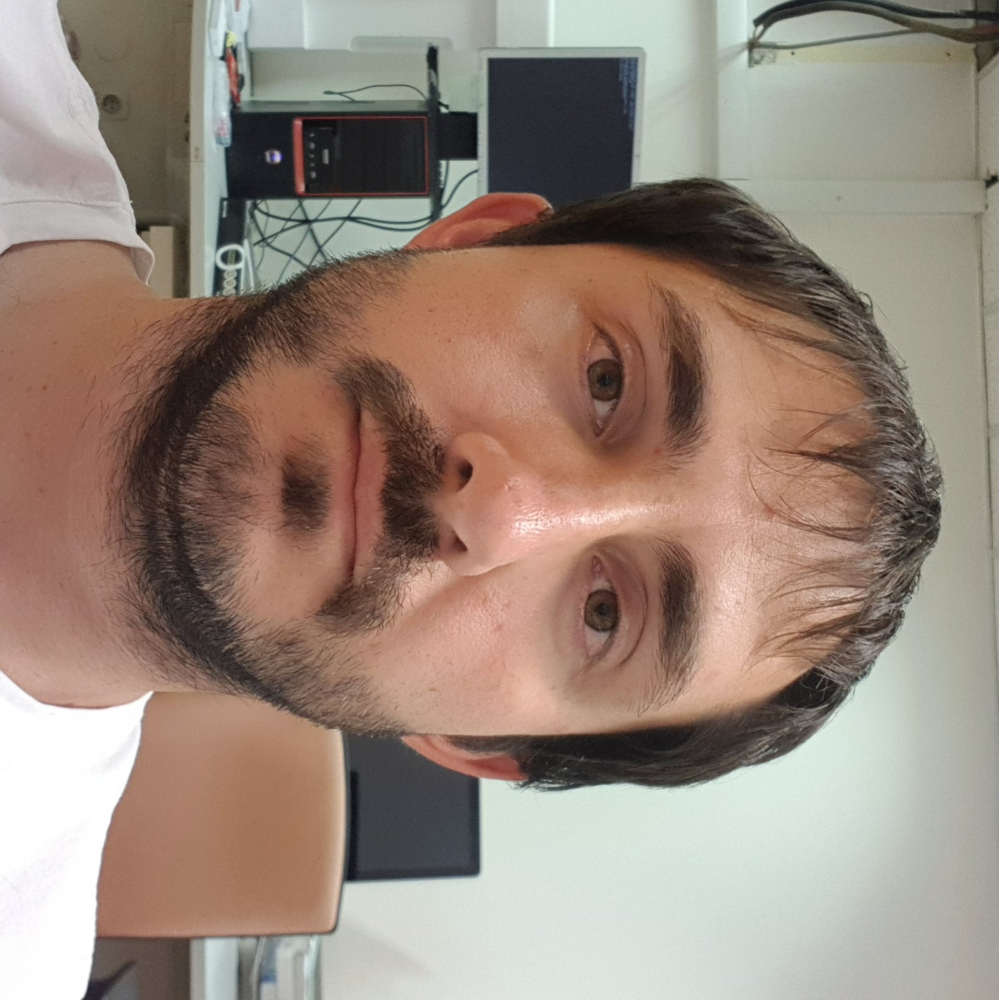

Germán Blesio

Strongly correlated electrons group
Condensed Matter division
Physics Institute of Rosario (IFIR)
Rosario, Santa Fe, Argentina
E-mail: blesio (at) ifir-conicet.gov.ar
Research
Magnetic order in 2D lattices: magnetic order of the 2D Heisenberg model in the transition from honeycomb to triangular lattice using Density Matrix Renormalization Group (DMRG); stability of the Nagaoka state for several values of t’ and hole doping in the square lattice with a hubbard model with first and second neighbour hopping using DMRG.
Kondo problem: study of a gold nanowire with a copper impurity (gives a SU(4) Kondo effect), and a nickel impurity (gives a two channel S=1 fully compensated Kondo effect). Calculations were made with Non-Crossing Approximation (NCA) and Numerical Renormalization Group (NRG Ljubljana). The addition of a magnetic onsite anisotropy unveil the topological characteristics of the non-Landau Fermi liquid. This new phase is one of my current line of research.
Raman response: calculation of raman vertex from DFT+DMFT calculations. .
Employment
I did my Ph.D at the Physics Institute of Rosario ( IFIR) with a grant of the National Council of Research, Science and Technology (CONICET).
From 2021 to 2023, I did a postdoc researcher at the Jozef Stefan Institute (JSI) as part of the Department of Theoretical Physics.
In 2023 I was accepted for a permanent research position at the Physics Institute of Rosario ( IFIR) and I’m working there since December 2023.
Publications
Anisotropy-driven topological quantum phase transition in magnetic impurities
G. G. Blesio, L. O. Manuel, and A. Aligia
Influence of oxygen on electronic correlation and transport in iron in the outer Earth’s core
G. G. Blesio, L. V. Pourovskii, M. Aichhorn, M. Pozzo, D. Alfè, and J. Mravlje
Signatures of Hund Metal and Fermi Liquid Behavior in Sr2RuO4 Revealed by Electronic Raman Scattering
G. G. Blesio, S. Beck, A. Georges, and J. Mravlje
Partially disordered Heisenberg antiferromagnet with short-range stripe correlations
G. G. Blesio, F. T. Lisandrini and M. G. Gonzalez
Topological quantum phase transition in individual Fe Atoms on MoS2/Au(111)
G. G. Blesio and A. A. Aligia
Topological quantum phase transition of nickelocene on Cu(100)
G. G. Blesio, R. Žitko, L. O. Manuel, and A. A. Aligia
Iron phthalocyanine on Au(111) is a “non-Landau” Fermi liquid
R. Žitko, G. G. Blesio, L. O. Manuel, and A. A. Aligia
Fully compensated Kondo effect for a two-channel spin S=1 impurity
G. G. Blesio, L. O. Manuel, A. A. Aligia, and P. Roura-Bas
Magnetic phase diagram of the infinite-U Hubbard model with nearest- and next-nearest-neighbor hoppings
G. G. Blesio, M. G. Gonzalez, and F. T. Lisandrini
Correlated Partial Disorder in a Weakly Frustrated Quantum Antiferromagnet
M. G. Gonzalez, F. T. Lisandrini, G. G. Blesio, A. E. Trumper, C. J. Gazza, and L. O. Manuel
Phys. Rev. Lett. 122, 017201 (2019) or arXiv:1804.06720 (2018)
Topological quantum phase transition between Fermi liquid phases in an Anderson impurity model
G.G. Blesio, L.O. Manuel, P. Roura-Bas and A.A. Aligia
Kondo behavior and conductance through 3d impurities in gold chains doped with oxygen
M.A. Barral, S. Di Napoli, G. Blesio, P. Roura-Bas, A. Camjayi, L.O. Manuel and A.A. Aligia
The Journal of Chemical Physics 146, 092315 (2017) or arXiv:1701.07080 (2017)
Teaching experience
Since March 2012 up to 2020, I worked as a Secondary Physics Teacher at the Instituto Politécnico Superior (IPS) that is part of the National University of Rosario (UNR). During this time I was responsible of teaching physics to several levels, but also worked on the training of students to participate on the national stage of the Science Olympiad and the Physics Olympiad. In 2019 I was the leader of the Argentinian team in the International Physics Olympiad (IPhO).
Since May 2014 up to 2020, I worked as Teaching Assistant at the Physics degree of the Faculty of Natural Science, Engineering and Surveying (FCEIA) part of the National University of Rosario (UNR). During this time, I worked on and introduction to the computer (Linux, gnuplot, LibreOffice) and programming (Fortran), and on Computational Physics were topics as digital image processing, neural networks, other machine learning techniques and parallelization were introduced, using C or Python.
During 2020 I was also the responsible professor for the electrical engineering students of Introduction to Physics and Physics 1 in the same faculty FCEIA-UNR.
During this process, I participate on some research in the field of physics education related with the areas and levels I was involved at the moment. Some of this research is reflected in the following publications:
Why are we not teaching machine learning at high school? A proposal
I. Evangelista, G. Blesio, E. Benatti
Physics in everyday life: a non-formal course for elderly adults
J. Farina, I. Tabares, C. Silva, G. Blesio, B. Milicic.